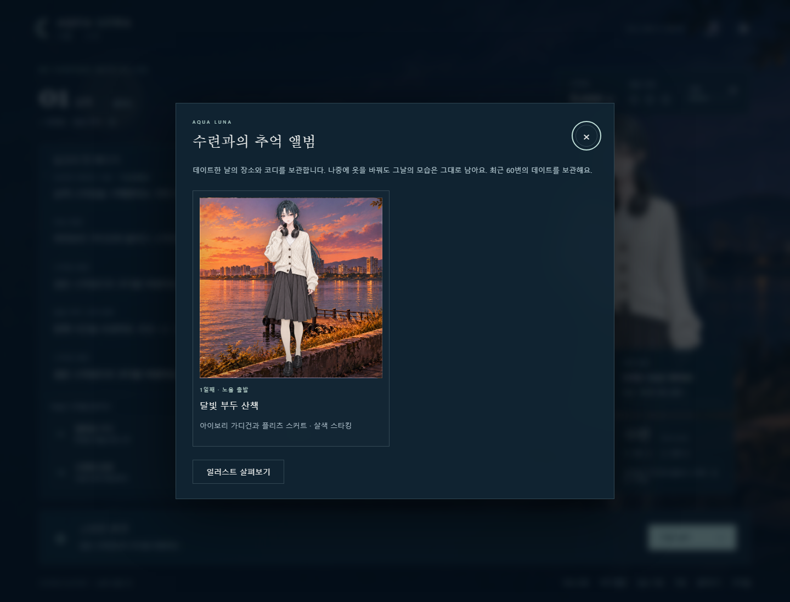

Aqua Luna · 다른 연애 시뮬레이션과의 차이점 보고서
작성·재확인: 2026-10-06 · 한국 시간
대상: Aqua-Luna-Ver2의 현재 코드와 수련 루트 기획안
판정 기준: 구현된 차이 / 장르 공통 요소 / 미구현 차별화 후보 / 부족한 부분
1. 결론
현재 가장 설명하기 쉬운 특징은 ‘주인공이 번 돈으로 수련의 옷을 사고, 직접 코디해 데이트한 모습과 시간대를 보관하는 흐름’입니다. 구매·착용·출발 준비·앨범이 실제로 연결되어 있습니다.
그러나 이것만으로 다른 연애 시뮬레이션보다 관계 경험이 깊다고 말할 수는 없습니다. 현재 데이트는 선택 과정 없이 즉시 정산되고, 수련이 지난 선택을 기억하는 대화도 없습니다. 외출 준비와 감상은 구현되어 있지만, 관계의 상호작용은 아직 개발해야 합니다.
돈 벌기, 옷, 표정, 시간대, 앨범, 한 인물 집중, 연인 이후 일상은 각각 이미 선례가 있는 요소입니다. 우리 게임의 방향은 이 요소들을 망원동·음악·수련의 성격과 하나의 반복 플레이 흐름으로 연결하는 것에 있습니다. 이 결합이 얼마나 특별하고 재미있는지는 후속 플레이 검증이 필요합니다. 조사한 작품 외의 시장 전체에서 유일하다는 주장은 하지 않습니다.
권장 핵심 경험: 수련의 취향을 알아가며 외출을 준비하고, 함께한 코디와 선택이 다음 만남의 기억으로 이어지는 일상 연애 시뮬레이션. 앞부분의 준비·외형 기록은 구현, 취향 발견·선택의 회상은 제안 단계입니다.
2. 조사 범위와 신뢰도
GameFinder를 우선 사용해 LovePlus, Tokimeki Memorial Girl’s Side 4th Heart, Our Life: Beginnings & Always를 조회했습니다. 세 호출 모두 Connection failed / UNAVAILABLE로 실패하여 게임 정보는 확보하지 못했습니다. 따라서 이 보고서를 GameFinder의 추천·평가 결과라고 표시하지 않습니다.
대신 개발사·퍼블리셔·제작자 공식 페이지를 2026-10-06에 다시 열어 확인했습니다. 앞선 시스템 조사 보고서를 바탕으로, 이번에는 기능 목록보다 우리 게임과 다른 지점 및 그 의미를 분석했습니다.
- 비교 표본: 7개 작품, 6개 계열. 판매량·인기 순위에 따른 선정은 아닙니다.
- 외부 게임: 공식 설명에 명시된 기능만 사용. 커뮤니티 댓글·사용자 태그는 근거에서 제외.
- Aqua Luna: 실제 데이터·상태 전이·화면 코드와 검토용 스토리 문서를 대조.
- 공식 페이지에 없다는 이유만으로 다른 게임에 해당 기능이 없다고 단정하지 않음.
- 외부 작품은 자료 조사이며 직접 플레이·이용자 조사는 하지 않았습니다. 우리 게임은 Game Studio 지침으로 구매·착용·데이트·앨범 흐름을 PC 1440px와 모바일 390px 폭에서 재검증했습니다. 전체 스토리나 실제 휴대전화 검증은 아닙니다.
- 상용 완성작과 개발 중인 프로토타입의 차이를 감안하며, 미구현 사항을 의도적인 장점으로 포장하지 않습니다.
3. 작품별로 무엇이 다른가
표에서 ‘의미’는 공식 설명과 현 프로젝트를 대조한 자체 분석입니다.
| 비교 작품·범위 | 공식 자료에서 확인한 특징 | 현재 Aqua Luna와의 차이 | 차이가 플레이에 주는 의미 |
|---|---|---|---|
| 도키메키 메모리얼 Girl’s Side 초대작 | 아르바이트 수입으로 주인공의 옷·액세서리를 사고, 코디로 상대 반응에 영향을 줌. 공식 쇼핑 설명 | 우리는 주인공이 돈을 벌어 수련에게 입힐 옷을 구매. 선택한 의상은 수련 일러스트와 앨범에 반영되지만 관계 보너스는 없음 | ‘내 모습을 꾸미기’와 ‘상대의 외출 차림을 직접 정하기’라는 조작 대상의 차이. 돈·쇼핑 자체는 공통 요소 |
| Girl’s Side 4th Heart | 공부·동아리·아르바이트, 여러 상대와 관계 확인, 그룹 데이트, 계절 장소, 이벤트 앨범. 공식 시스템 | 우리 게임은 수련 한 명, 일·휴식·데이트의 간단한 시간 배분, 당시 코디·시간대 앨범에 집중 | 선택지를 좁혀 한 관계에 집중할 수 있음. 현재 콘텐츠의 적은 양을 ‘더 깊은 관계’라고 볼 근거는 없음 |
| 러브플러스 · DS 원작 | 연인이 된 이후 현실 시간·계절과 함께 교류. 대화가 상대의 머리·옷 취향 등에 영향. Nintendo 게재 제조사 설명 | 우리는 게임 행동 칸으로 시간이 변하고, 보유한 수련 의상을 메뉴에서 직접 착용. 고백·연인 상태는 아직 없음 | 외형 변화 자체는 신규성이 약함. 직접 코디하는 조작과 접속 시간에 묶이지 않는 진행이 비교 지점. 연인 이후 일상은 향후 동등한 기반을 갖출 과제 |
| 아마가미 | 최대 5턴의 대화, 화제·텐션·호감도 변화, 이전 화제 성공 기록. 공식 대화 모드 | 우리는 준비 후 완료 버튼으로 비용·호감·신뢰가 즉시 변함. 대화 주제·분위기·중간 선택 없음 | 현재 가장 큰 부족함이 드러나는 비교. 준비한 데이트 안에서 판단할 내용이 필요 |
| Our Life: Beginnings & Always · 기본 작품 설명 | 중심 상대 Cove, 성장 과정, 플레이어 성격·취향 기억, 관계 속도·형태 선택. 제작사 페이지 | 우리는 수련 단독과 외출 예산·코디에 집중. 선택 기억과 관계 속도 조절은 미구현 | 단일 상대와 편안한 일상만으로는 차별화하기 어려움. 우리에게는 돈·시간·코디를 계획하는 흐름이 있으나 인물 기억의 깊이는 아직 부족 |
| Love Esquire · PC Steam판 설명 | 능력치 육성, 턴제 전투, 선물·대화, 여러 상대와 결말. 개발사 제품 소개 | 우리는 전투 없이 일하기·쇼핑·데이트를 텍스트 메뉴로 진행. 자기계발·선물·분기 결말 미구현 | 짧고 단순한 조작을 원하는 이용자에게 맞을 수 있다는 가설. 장기 목표와 활동 변화가 적은 점은 보완 필요 |
| Date Everything! · 2024년 공식 발표에 명시된 설계 | 사물 의인화, 다수 인물, 분기 대화, Love/Friend/Hate 관계 결과, 3D 탐색. 퍼블리셔 발표 | 우리는 현대 망원동의 수련과 텍스트 중심 일상. 탐색·다수 상대보다 하나의 외출 순환에 집중 | 소재·규모·조작의 차이. 다인 콘텐츠를 따라 늘리기보다 수련과의 반복 만남에 변화를 주는 편이 현재 요청에 맞음 |
Our Life의 DLC 전체 구성이나 Love Esquire 모바일판 경제, Date Everything!의 출시 후 모든 기능까지 위 표로 일반화하지 않습니다.
4. 지금 실제로 내세울 수 있는 차이
A. 수련에게 직접 입히는 외출 준비
이미 구현된 순서는 일하기 → 구매 → 옷장에서 착용 → 장소와 코디 확인 → 데이트 완료 → 앨범입니다. 구매와 착용은 별개이고, 옷을 입히는 행동에는 돈·시간이 다시 들지 않습니다.
의상 6종, 별도 구매하는 검은·살색 스타킹 2종이 있습니다. 스타킹은 현재 치마 세트에만 연결됩니다. 상·하의·신발을 각각 자유롭게 조합하는 시스템은 아닙니다.
평가: 현재 요구를 가장 잘 드러내는 제품 특징. 다만 연애 게임 전체에서 처음인 기능이라는 근거는 없습니다. 구매 후 달라진 모습이 실제로 보이는 점과 준비 흐름을 강조할 수 있습니다.
B. 당시 코디와 출발 시간을 다시 보여주는 앨범
현재 앨범은 데이트 날짜·종류·의상·스타킹·출발 시간대를 보관합니다. 나중에 갈아입거나 다음 날로 넘어가도 당시 모습으로 표시합니다. 최근 60회 기록을 유지합니다.
평가: 플레이어가 만든 외출 모습을 기록하는 특징은 실제로 구현되어 있습니다. 다만 대사·선택 결과·특별한 감정은 기록하지 않으며, 고유 이벤트 CG나 완성된 회상 장면도 아닙니다. 기존 작품의 앨범보다 우수하다고 단정할 수 없습니다.
C. 플레이어가 진행시키는 하루
하루 행동 칸 3/2/1/0을 아침/오후/노을/밤에 대응시킵니다. 실제 시계와 연동하지 않으며 미접속 일수로 관계가 줄지 않습니다. 비용이 2칸인 행동은 두 단계를 전진합니다.
평가: 현실 시간과 연동되는 러브플러스의 소개된 방식과 비교해 이용 리듬이 다릅니다. 다만 턴·행동 기반 진행은 새 발명이 아닙니다. 현재 밤은 행동 칸을 다 쓴 상태이므로 별도 야간 데이트를 실행하는 시스템도 아닙니다. 일부 장소는 시간대별 그림을 공유합니다.
D. 바로 확인 가능한 예산과 로컬 실행
구매·데이트의 비용과 부족 금액, 저축 목표, 활동 후 자원을 보여줍니다. 로컬 HTML을 브라우저에서 열고 자동·수동 저장 및 파일 백업을 사용할 수 있습니다. 별도 계정은 없습니다.
평가: 접근성과 이해하기 쉬운 조작의 장점입니다. 연애 서사의 차별성 자체는 아니며, 모든 경쟁작보다 간편하다는 비교 실험도 하지 않았습니다.
현재 근거: 데이터 목록, 경제·기록 규칙의 act/dateWithOutfit, 화면 코드의 prepareDate/album/gallery, 실행 안내.
5. 차별점으로 과장하면 안 되는 요소
| 후보 표현 | 조사 결과와 현재 상태 | 적절한 설명 |
|---|---|---|
| 돈을 벌어 옷을 사는 새로운 연애 게임 | GS 쇼핑에 선례가 있음 | 수련에게 직접 입히는 구매·착용 흐름 |
| 한 명에게 집중하므로 더 깊은 연애 | Our Life도 중심 상대에 집중. 우리는 실제 대화가 아직 없음 | 수련 단독 설계이며 깊이는 앞으로 콘텐츠로 입증 |
| 연인 이후에도 계속되는 독창적 구조 | 러브플러스에 선례. 우리 게임에는 아직 연인 상태 없음 | 검토 중인 연인 이후 일상 기획 |
| 캐릭터가 선택과 취향을 기억함 | Our Life에 선례. 우리 저장에는 대화 선택 기억이 없음 | 코디·시간대 기록은 구현, 대화 기억은 개발 후보 |
| 표정 5종으로 감정을 시뮬레이션함 | 그림 종류와 감정 규칙은 별개. 표정은 현재 갤러리에서 선택 | 지원 의상별 표정 감상 기능 |
| 낮·밤마다 다른 데이트 내용 | 배경 전환은 구현. 시간에 따른 대사·행동 차이는 없음 | 시간대별 외형 변화와 출발 시간 기록 |
| 호감·신뢰로 복잡한 관계를 표현함 | 두 수치는 있지만 현재 데이트별 고정 증가. 신뢰는 공연 조건에 사용 | 관계 수치의 기초 구조 구현 |
| 이미지 34장이라 경쟁작보다 풍부함 | 캐릭터 22장·배경 12장. 분기 수·대사량·상호작용과 다른 지표 | 현 버전의 로컬 일러스트 수량 |
1~4행의 선례 근거는 3절의 각 공식 링크입니다. 이 표의 판단은 기능 유무와 관계 경험을 구분하기 위한 분석입니다.
6. 차별성을 약하게 만드는 현재 문제
가장 우선할 문제는 데이트 내용입니다. 다른 의상과 배경을 고를 수 있어도, 실행 결과가 같은 고정 보상이라면 준비하는 재미가 관계 경험으로 이어지지 않습니다.
| 문제 | 코드에서 확인한 상태 | 플레이에서 예상되는 결과 |
|---|---|---|
| 데이트 안의 선택이 없음 | dateWithOutfit이 act의 즉시 완료로 연결 | 함께 무엇을 했는지보다 비용 지불과 수치 상승만 기억할 가능성 |
| 반복으로 같은 보상 획득 | 산책은 매회 호감 +3·신뢰 +4, 일일 1회 제한 | 무료 산책 반복만으로 관계 수치가 올라가 행동 다양성의 동기가 약함 |
| 코디와 시간대가 관계에 무관 | 날짜·옷·시간은 보관하지만 보상은 데이트 종류로 결정 | 새 옷 구매가 감상 이상의 의미를 갖기 어려움 |
| 수련의 독립적인 상태가 없음 | 현재 energy는 플레이어 활동 자원. 수련의 일정·피로·초대 판단은 없음 | 상대가 먼저 계획하거나 상황에 반응하는 느낌이 부족 |
| 장기 관계 변화가 없음 | 고백·연인·갈등 회복·사건 상태가 게임에 없음 | 수치가 충분히 높아져도 관계가 질적으로 달라지지 않음 |
| 표현과 콘텐츠의 연결이 없음 | 의상별 표정 이미지는 있으나 시나리오가 선택하지 않음 | 그림 증가가 대화의 생동감 증가로 바로 이어지지 않음 |
오른쪽 열은 예상이며 실제 이용자 반응 조사 결과가 아닙니다. 현재 버전은 경제·코디·저장 프로토타입으로 평가하는 것이 정확합니다.
7. 우리 게임에 맞는 차별화 방향
최우선 후보는 ‘외출의 준비가 둘만의 기억이 되는 구조’입니다. 기존 코디와 앨범을 버리지 않고, 다음 만남에 영향을 주는 선택을 추가하는 방향입니다. 아래는 모두 개발 제안이며 자동 승인·반영된 기능이 아닙니다.
| 우선순위 | 제안 | 수련 게임에서의 구체적 의미 | 완료를 판단할 증거 |
|---|---|---|---|
| 1 | 선택이 있는 카페 데이트 한 코스 | 도착·함께할 활동·마무리에서 선택하고 수련의 반응 확인 | 실제 승인 대본으로 한 코스를 끝까지 플레이. 선택에 따라 기록과 반응이 달라짐 |
| 2 | 다음 만남에서 지난 선택 회상 | 이전에 함께 정한 휴식 방식·외출 경험을 다시 언급 | 서로 다른 선택의 저장 파일에서 다음 만남의 내용이 실제로 다름 |
| 3 | 코디와 추억을 대화에 연결 | 플레이어가 고른 옷을 당시의 약속·장소와 연결 | 갈아입은 뒤에도 과거 코디와 기억이 일치. 비싼 옷이 무조건 정답은 아님 |
| 4 | 수련의 음악·일상과 만남 연결 | 연습 전후의 여유, 공연 감상, 조용한 장소라는 설정이 판단에 사용됨 | 같은 장소라도 상황에 따라 다른 활동이 열림. 설정·대사는 사용자 확인 후 적용 |
| 5 | 수련이 먼저 제안하는 만남 | 계속 초대받기만 하는 구조를 줄이고 이전 교류를 바탕으로 제안 | 이전 행동에 따라 가능한 제안이 달라지고 거절·재약속도 가능 |
| 6 | 연인 이후 공동 목표 | 고백 이후 함께 준비할 외출·기념 경험으로 순환을 확장 | 승인된 연애 성립 장면 이후에도 새로운 선택과 변화가 실제로 존재 |
목표 경험 예시 — 실제 대본 아님
같은 카페, 같은 의상이라도 이전 만남에서 선택한 활동과 현재 상황에 따라 대화의 시작과 가능한 선택이 달라집니다. 완료 후 앨범에는 코디·시간뿐 아니라 함께 정한 내용이 남고, 다음 만남이 그것을 한 번 다시 활용합니다.
이 예시는 구현할 효과를 설명하는 설계 사례입니다. 새로운 수련의 취향이나 대사를 확정하지 않습니다. 플레이어가 직접 코디하는 기존 요구도 유지합니다.
비교에서 도출한 포지셔닝
GS에서 확인되는 생활 계획·쇼핑, 러브플러스의 지속 교류, Our Life의 기억되는 선택을 참고할 수 있습니다. 그러나 세 작품의 기능을 나열한다고 자동으로 차별화되지는 않습니다. 수련의 성격과 음악이라는 맥락 안에서, 구매한 옷과 함께한 시간이 관계의 구체적인 기억으로 남는가가 우리 게임의 판단 기준이 되어야 합니다.
음악적 성장과 매니저 관계는 스토리 검토 초안의 제안 범위입니다. 망원동·수련의 성악 배경은 원작 참조 설정이지만, 새 게임의 시작 관계·갈등·결말은 아직 사용자 확인 전입니다. 설정 출처
8. 다음 개발에서 먼저 검증할 것
추가 의상 수보다 기존 의상으로 서로 다른 관계 경험이 생기는지를 먼저 확인하는 것이 이 보고서의 권고입니다. 추가 의상 제작을 중단하라는 뜻은 아니며, 핵심 시스템의 우선순위 제안입니다.
- 승인된 카페 대본 한 코스로 선택·반응·마무리·저장을 연결.
- 서로 다른 선택 기록 2개가 다음 만남에서 서로 다른 반응으로 이어지는지 확인.
- 무료 산책과 기본 옷으로도 관계의 주요 진전을 만들 수 있게 검증.
- 수련의 코디·지원 표정·배경·앨범이 중간 저장과 재접속 후에도 일치하는지 확인.
- 처음 하는 사람에게 ‘무엇을 골랐고, 수련이 왜 그렇게 반응했는지’를 설명해 보게 하여 이해 여부 확인.
- 별도의 짧은 비교 테스트로 준비·데이트·앨범 중 무엇을 기억했는지 수집. 아직 이 이용자 테스트는 실시하지 않음.
9. 제출 판단과 후속 문서
현재 차이: 수련 직접 코디, 외출 예산과 착용의 연결, 당시 코디·시간대 앨범, 플레이어가 진행시키는 하루.
장르 공통 기반: 일하기·호감도·쇼핑·표정·장소·앨범·저장.
우선 보완: 데이트 내부 선택, 선택 기억, 관계 변화, 수련의 능동적 반응.
향후 핵심 차별화 후보: 코디와 함께한 경험이 다음 만남의 대화·제안으로 돌아오는 수련 중심 일상.
이번 요청으로 보고서를 작성했으며, 게임 시스템과 시나리오는 수정하지 않았습니다. 앞서 요청한 스토리 확인 절차도 유지합니다.
- 기존 시스템 조사 보고서: 장르 시스템과 개발 우선순위.
- 시스템 개발 작업 목록: 실제 개발 단위와 검증 항목.
- 스토리·시나리오 검토 v0.1: 6막·12장면 구성, 5장면 상세 초안. 게임 미반영.
- 현재 게임 안내: 구현 범위와 실행 방법.
10. 요청한 두 플러그인 관점의 추가 점검
적용한 기능과 실행 경계
| 플러그인 | 이번에 적용한 지침 | 실제 실행 | 한계 |
|---|---|---|---|
| Game Studio | game-studio에서 game-playtest로 분류. 조작·화면 전환·상태 피드백·모바일·재현 절차 기준 | 기존 Chrome 자동화로 경제·코디·데이트·앨범 검사. PC 1440px와 모바일 390px 각각 8/8 통과, 캡처 열람 | 비교 작품 자체를 실행한 것이 아님. 실기기·음성·전체 시나리오 검증 아님 |
| Game Development Studio | game-asset-production의 실파일 확인·크기/포맷·제작 기록·검증 단계 구분 원칙 | 전용 CLI 탐색 후, 대체 로컬 검사로 34장 PNG 디코딩·해상도·모서리 투명도·파일 크기·SHA-256 확인. 조합 확장량 계산 | game-dev가 PATH와 확인한 후보 경로에 없어 capabilities/doctor/asset inspect를 실행하지 못함. 전용 CLI 검증·패키지 인증 결과로 표현하지 않음 |
사용한 스킬: Game Studio 0.1.2의 game-playtest, Game Development Studio 1.0.2의 game-asset-production. 두 플러그인은 이번 비교에서 플레이 검증과 에셋 제작 판단을 돕는 역할로 사용했습니다. 경쟁작 사실의 출처는 3절의 공식 문서이며, 플러그인이 경쟁작을 자동 분석하거나 시장의 독창성을 인증한 것은 아닙니다.
Game Studio: 플레이 경험 비교에서 중요한 발견
| 우선도 | 관찰한 사실·재현 경로 | 경쟁작 비교에서의 의미 | 담당 영역·권고 |
|---|---|---|---|
| 높음 | 새 게임 → 데이트 초대 → 무료 산책 → 출발. 즉시 결과와 앨범 생성 | 아마가미의 화제 선택처럼 만남 안의 판단 과정이 아직 없음 | 콘텐츠·상태 전이. 승인된 코스의 단계별 선택부터 구현 |
| 높음 | 같은 데이트를 다음 날 반복. 옷을 바꿔도 같은 기본 보상 | Our Life가 소개하는 인물의 선택 기억에 대응하는 체험이 없음 | 관계·기억 시스템. 이전 선택을 활용하는 다음 만남 필요 |
| 중간 | 옷장에서 다른 옷으로 교체 → 과거 앨범 확인. 이전 코디·노을 출발 유지 | 우리가 현재 보여줄 수 있는 특징이 코드뿐 아니라 화면에서도 확인됨 | 앨범·표현. 대화 기억을 추가해 발전시킬 기반 |
| 중간 | 390px 폭에서 데이트 준비창 열기. 이미지·설명·코디 다음에 출발 버튼 배치 | 준비의 분위기는 전달되나 실제 출발까지 세로 스크롤이 필요 | UI. 모바일 비용 요약과 출발 버튼의 접근성 개선 후보 |
| 낮음 | 갤러리에서 치마·검은 스타킹·미소 → 셔츠로 변경 | 지원하지 않는 조합은 기본 표정·미착용으로 바뀌어 깨진 이미지 방지 | 에셋 연결. 안정성은 장점이나 감정 반응 기능과는 별개 |
위의 높음·중간·낮음은 발견한 항목을 처리할 우선순위입니다. 상용 게임 대비 품질 점수나 치명적 오류 등급이 아닙니다. 첫 두 항목은 현재 프로토타입의 콘텐츠 공백이며 런타임 오류로 분류하지 않습니다.
Game Development Studio: 그림 수보다 조합과 연출 연결
실파일 검사 결과는 이미지 검사 기록에 보관했습니다.
| 항목 | 확인 결과 | 비교·제작 판단 |
|---|---|---|
| 파일 수·크기 | PNG 34장, 합계 65.42 MiB | 파일 총량은 측정. 실제 첫 로딩 전송량이나 FPS 측정값은 아님 |
| 캐릭터 | 22장, 모두 1024×1536, 네 모서리 alpha 0 | 투명 배경으로 장소와 합성 가능. 모서리 검사만으로 모든 경계 품질을 인증하지 않으며 실제 합성 화면도 별도 확인 |
| 배경 | 12장, 모두 1672×941, 장소 5곳 | 시간대 변주 기반. 5곳 모두에서 4시간대가 각각 다른 그림인 것은 아님 |
| 표정 지원 | 후드 5, 니트 3, 코트 3, 치마 각 스타킹 조합 3, 셔츠·블라우스 각 1 | 다른 옷에서도 같은 감정 연출을 하려면 지원 범위를 먼저 맞춰야 함 |
| 표현 방식 | 정적 캐릭터와 배경 합성 | GS4 공식 소개의 Live2D 연출과 방식이 다름. 정적 그림만으로 움직임·목소리의 효과를 갖췄다고 볼 수 없음 |
| 제작 기록 | 기존 ART_ASSETS 및 ART_DAYTIME_EXPANSION에 생성 프롬프트·참조 기록 | 추후 수정에 재사용할 기록이 있으나 전용 CLI의 검증된 정식 패키지로 구성된 상태는 아님 |
Live2D 비교 근거: GS4 공식 시스템. 파일 수가 적다는 것만으로 그림의 미적 품질이 낮다고 판단하지 않으며, 현재 게임의 제작 범위와 필요한 연결 작업을 구분합니다.
확장량 계산: 현재 외형은 의상 세트 6종에 치마의 스타킹 변형 2개를 더한 8가지입니다. 이 8가지에 표정 5종을 모두 제공한다면 40장이 필요합니다. 현재 22장을 그대로 사용한다는 가정 아래 18장 추가입니다. 또한 장소 5곳에 서로 다른 시간대 4종을 전부 만들면 배경 20장으로, 현재 12장 대비 8장 추가입니다.
이는 가능한 제작 범위를 계산한 것으로, 26장을 지금 생성하겠다는 결정이 아닙니다. 모든 실내 장소에 서로 다른 4시간대 그림이 반드시 필요한 것도 아닙니다.
그림을 배경과 캐릭터로 분리하면 이 가정의 조합에 40+20=60장의 원본을 사용할 수 있습니다. 40×20=800장은 모든 조합을 한 장씩 평면 그림으로 만드는 경우의 비교 수치입니다. 800개의 시나리오나 데이트 콘텐츠가 생긴다는 뜻은 아닙니다.
현재 PNG 묶음은 배포 전 용량 검토 대상입니다. 압축·WebP 변환이 필요할지는 실제 화질과 로딩을 측정해 결정해야 하며 이번 보고서에서는 파일을 변환하지 않았습니다.
증거와 재현
- PC 앨범 캡처: 출발 때 살색 스타킹과 노을이 유지되는 기록.
- 390px 데이트 준비 캡처: 다음 날 아침의 검은 스타킹 코디와 준비창.
- 실행한 기존 시나리오: wardrobe.test.js. 각 8/8 통과와 34/34 이미지 로딩 확인.
- 명세·프롬프트: 초기 추가 이미지, 시간대·표정 확장.
- 모바일 검증은 Chrome 내부 프레임의 정확한 390px 폭을 사용했습니다. 캡처 파일 오른쪽 흰 영역은 테스트용 외부 창이며 게임 화면의 가로 넘침이 아닙니다.


두 플러그인 관점을 합친 권고: 추가 이미지와 실제 반응을 연결하는 카페 한 코스를 먼저 완성하고, 그 코스에서 필요한 의상·표정 조합을 보충하는 순서가 적합합니다. 이야기는 기존 검토 보고서에서 확인받은 내용만 반영합니다.
